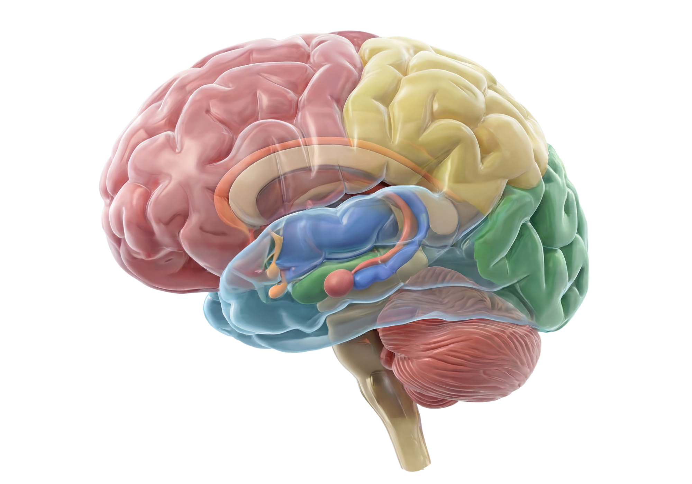

Tap any glowing dot on the brain to activate that region's neural data.
You've scanned all 11 brain regions. You now understand how each one shapes your thoughts, emotions, and decisions every single day.